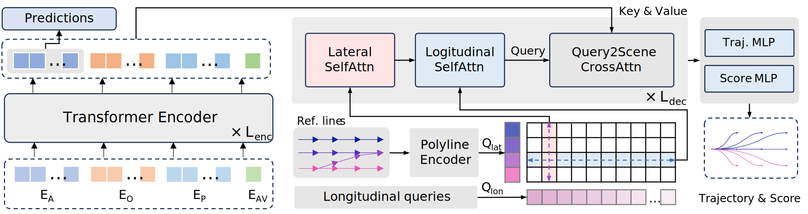
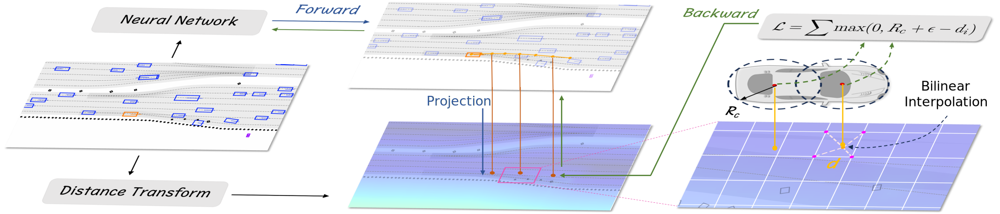
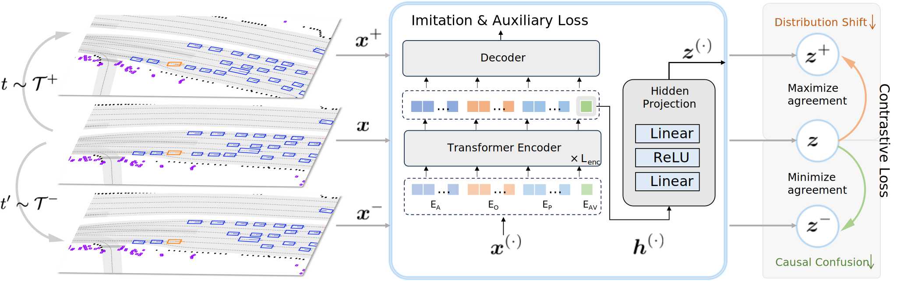

Method Overview
Model Architecture
We introduce a query-based model architecture that simultaneously addresses lateral and longitudinal planning maneuvers, enabling flexible and diverse driving behaviors.
Auxiliary Loss Computation Method
We propose a novel method for calculating auxiliary loss based on differential interpolation. This method is applicable to a broad spectrum of auxiliary tasks and allows for efficient batch-wise computation in vector-based models.
Contrastive Imitation Learning Framework

We present the Contrastive Imitation Learning (CIL) framework, accompanied by a new set of data augmentations. The CIL framework is aimed at regulating driving behaviors and enhancing interaction learning, without significantly increasing the complexity of training.